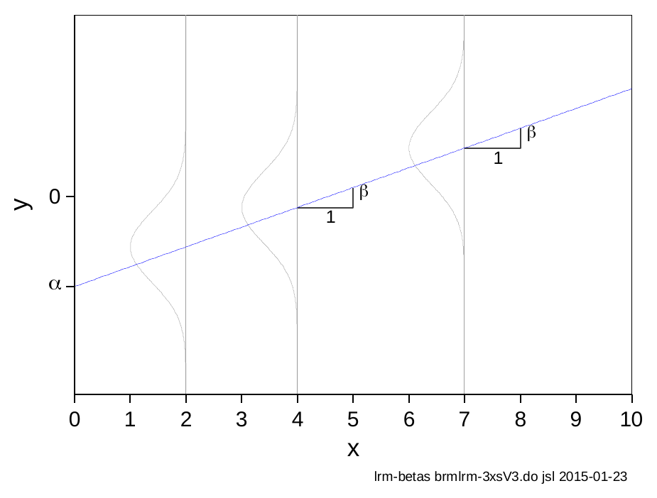
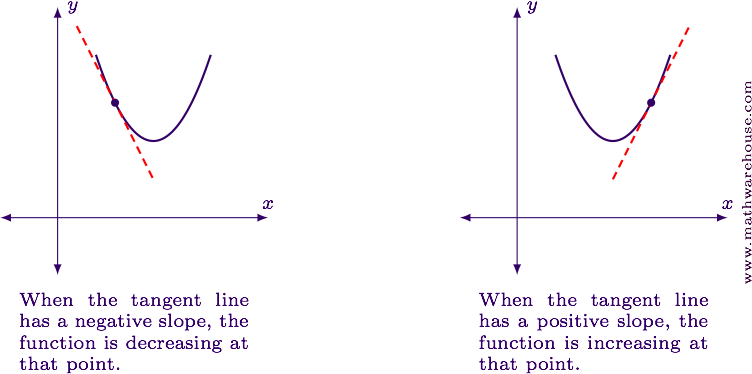
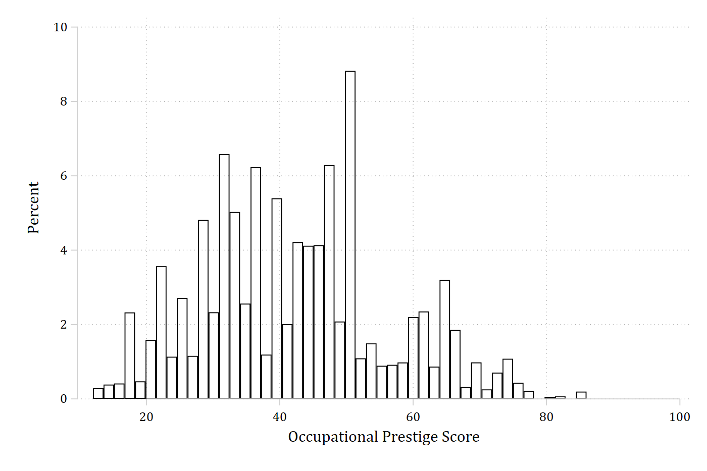

A marginal effect is your model’s answer to a counterfactual question:
If the value of this independent variable were different, how would the predicted outcome change?
Every marginal effect is an answer to some “what if” question you pose to your fitted model
A marginal effect is defined as:
The predicted change in the outcome for a change in\(x_{k}\)of δ, holding other predictors constant
And is calculated as the difference between two model predictions (\(\eta\))
With nonlinearities, it is often the best choice to provide a summary of the effect of a variable
Marginal effects with linear additive effects
In the special case of a linear regression model with linear, non-interactive (i.e., additive) effects: \({ME}_{x_{k} + 1} = \beta_{x_{k}}\)
This is only true in this incredibly limited situation

Marginal effects with nonlinear and/or interactive effects
Marginal effects are most useful for nonlinear and/or interactive effects
In these cases, the marginal effects are summarizing different information than the coefficients
Marginal effects defined
Denote our focal IV as \(x_{k}\)
Denote the control variables as \(\mathbf{x}_{- k}\) (all other IVs in the model excluding \(x_{k}\))
A marginal effect, at its simplest, is the difference between two predictions (denoted as \(\eta\) “eta”): one at a starting value of substantive interest; one at an ending value of substantive interest
Starting and ending values of the focal IV \(x_{k}\) can be any values of substantive interest. For binary IVs, there are only two logical choices: 0 and 1
For example, can compare a prediction for no degree (=0) to college (=1)
Marginal effects for continuous IVs
For continuous IVs, there are many more choices for starting and ending values. Common choices:
start = mean of \(x_{k}\)
end = mean + 1
end = mean + SD is also common*; sometimes more informative
Any other values of substantive interest can be used for start and end (e.g., age 30 and age 55)
This flexibility is one of the benefits of using marginal effects for interpretation
Amount of change (\(\delta\))
There are two types of marginal effects for continuous IVs, differing in the amount of change \(\delta\) (Mize and Han 2026)
Discrete change in \(\widehat{y}\) as an IV changes by a fixed amount
E.g., A one unit increase; a standard deviation increase
Instantaneous rate of change in \(\widehat{y}\) (first derivative; AKA slopes)
Rates of changes are less intuitive to interpret and thus less popular in most social science applications
*In most applications, especially for large changes, I recommend centering the change on start value
Terminology is confusing
“Mathematics is the art of giving the same name to different things.” – Henri Poincaré
I use marginal effects as an umbrella term for all of these effects (i.e., both discrete and rates of changes), regardless of the specific amount of change
“Marginal” comes from the idea of evaluating a change at the margin—that is, asking what happens to an outcome when a predictor changes slightly, holding other things constant
Instantaneous rates of changes (AKA slopes) are sometimes called partial effects or (even more confusing) marginal changes

Example: Occupational Prestige
Data is from pooled General Social Survey (GSS) data from 1972 – 2016
(cda_gss.dta | GSS 1972-2021 CDA - Categorical Data Analysis | date created 202
> 3)
hist occprest, percent fcol(none) ylab(0(2)10)
(bin=47, start=12, width=1.5744681)

library(haven) # import Stata data and labelslibrary(dplyr) # data manipulationlibrary(ggplot2) # graphslibrary(modelsummary) # regression tableslibrary(marginaleffects) # predictions and marginal effectslibrary(cleanplots) # graph schemecleanplots_defaults()gss <-read_dta("https://tdmize.github.io/data/data/cda_gss.dta")# Keep only model vars and drop any missing data on themgss <- gss[c("occprest", "age", "woman", "college")]gss <- gss[complete.cases(gss), ]# Treat binary variables as factors using their value labelsgss <- gss |>mutate(woman =as_factor(woman), college =as_factor(college))ggplot(gss, aes(occprest)) +geom_histogram(fill =NA, color ="black") +labs(x ="Occupational prestige")
Source | SS df MS Number of obs = 58,304
-------------+---------------------------------- F(3, 58300) = 6232.46
Model | 2765051.56 3 921683.852 Prob > F = 0.0000
Residual | 8621657.35 58,300 147.884346 R-squared = 0.2428
-------------+---------------------------------- Adj R-squared = 0.2428
Total | 11386708.9 58,303 195.302281 Root MSE = 12.161
-------------------------------------------------------------------------------
occprest | Coefficient Std. err. t P>|t| [95% conf. interval]
--------------+----------------------------------------------------------------
age | 0.041 0.003 14.027 0.000 0.035 0.047
|
woman |
Women | -0.178 0.101 -1.756 0.079 -0.376 0.021
|
college |
College De.. | 16.422 0.121 136.142 0.000 16.185 16.658
_cons | 36.621 0.157 233.710 0.000 36.314 36.928
-------------------------------------------------------------------------------
esttab, b(2) se(2) nobase label///title("[2.1.b] Occupational Prestige Based on Age, Gender, and Education")
[2.1.b] Occupational Prestige Based on Age, Gender, and Education
------------------------------------
(1)
Occupation~e
------------------------------------
age of respondent 0.04***
(0.00)
Women -0.18
(0.10)
College Degree 16.42***
(0.12)
Constant 36.62***
(0.16)
------------------------------------
Observations 58304
------------------------------------
Standard errors in parentheses
* p<0.05, ** p<0.01, *** p<0.001
linmod <-lm(occprest ~ age + woman + college, data = gss)summary(linmod)
Call:
lm(formula = occprest ~ age + woman + college, data = gss)
Residuals:
Min 1Q Median 3Q Max
-42.609 -8.267 -0.981 8.663 48.156
Coefficients:
Estimate Std. Error t value Pr(>|t|)
(Intercept) 36.620820 0.156694 233.710 <2e-16 ***
age 0.041207 0.002938 14.027 <2e-16 ***
womanWomen -0.177728 0.101220 -1.756 0.0791 .
collegeCollege Degree 16.421830 0.120623 136.142 <2e-16 ***
---
Signif. codes: 0 '***' 0.001 '**' 0.01 '*' 0.05 '.' 0.1 ' ' 1
Residual standard error: 12.16 on 58300 degrees of freedom
Multiple R-squared: 0.2428, Adjusted R-squared: 0.2428
F-statistic: 6232 on 3 and 58300 DF, p-value: < 2.2e-16
modelsummary(linmod, stars =c("*"= .05, "**"= .01, "***"= .001),title ="[2.1.b] Occupational Prestige Based on Age, Gender, and Education")
[2.1.b] Occupational Prestige Based on Age, Gender, and Education
(1)
* p < 0.05, ** p < 0.01, *** p < 0.001
(Intercept)
36.621***
(0.157)
age
0.041***
(0.003)
womanWomen
-0.178
(0.101)
collegeCollege Degree
16.422***
(0.121)
Num.Obs.
58304
R2
0.243
R2 Adj.
0.243
AIC
456777.5
BIC
456822.3
Log.Lik.
-228383.735
F
6232.464
RMSE
12.16
Side note: to make publication quality regression tables in Stata, I recommend esttab. To visualize regression coefficients, I recommend coefplot.
Interpretation: having characteristic xk (as opposed to not having the characteristic) results in an expected change of ME in y, holding other variables constant
Note these are usually group comparisons. Interpretations are more natural when you state these as comparisons
Again, in the case of linear additive effects: \({ME}_{x_{k} + 1} = \beta_{x_{k}}\)
On average, those with college degrees hold jobs that are 16.43 points more prestigious than jobs held by those without a college degree (accounting for other factors)